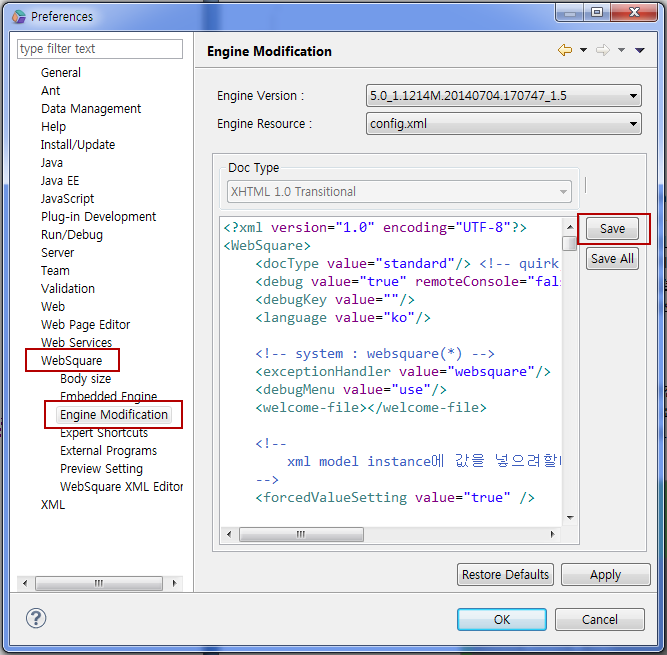

4.config.xml
config.xml은 웹스퀘어의 JavaScript에서 참고하는 설정으로로컬 엔진 사용시에는WebSquare(웹스퀘어 설치 폴더)\plugins\com.inswave.websquare.webapp.engine_1.0.0.xxxxxxxxxxxx\websquare
\config.xml에 위치합니다.웹스퀘어초기 설정과 같은 정보로, 수정이 필요할 때에는 프로젝트의 Resource관리를 하는 담당자에게 논의를 하여야 합니다.
이 문서에서는퍼블리셔의 작업을 위해 기본적으로 설정해야하는 노드들을 설명합니다. 더 자세한 속성에 대한 설명은 기술지원 사이트(http://www.inswave.com/support/)의 Document탭 -> 004.ConfigurationGuide의 설정 관련 가이드 문서를 참고하십시오.
config.xml에 설정을 변경하는 방법은 WebSquare 설치 폴더 내에 존재하는 config.xml을 직접 수정하는 방법과, WebSquare 스튜디오 내에서 설정하는 방법이 있습니다.스튜디오 내에서 수정을 하실 때에는 상단 메뉴 Window -> Preferences -> Config Modificatoin 을 클릭하여 편집기에서 해당 노드를 추가 혹은 수정을 하신 후 SAVE를 하시면 됩니다.

4.1웹표준 관련 설정
<emptyTag value="br,input" />
<br/>과 같은 empty tag(닫기 태그가 별도로 없는 태그)를 한번만 주었음에도 마크업이 2번 되는 경우 추가합니다.
웹스퀘어 컴포넌트 사용하지 않고 별도의 html tag를 직접 사용하는 경우 대표적으로 br 태그를 사용할 때 이러한 empty 태그들은 xml 내부에서 사용되는 instance data들과의 차별성을 두기 위해 인코딩 및 파싱 과정에서 해당 태그를 두번 찍어주게 됩니다.이에 br을 한번만 주었음에도 2번 찍히는 경우가 발상하게 됩니다.
위에 value로 준 br, input 태그 이외에도 이러한 현상이 발생하면 value에 ',태그명' 형태로 추가해 주시면 됩니다.
4.2API 관련 설정
<style>
<removeDefaultClass value="true"/>
</style>WebSquare에서 제공하는 componentID.removeClass나 componentID.removeClass API의 경우 컴포넌트에 정의된 기본 CSS Class(stylesheet.css 내용) 보호를 위해addClass나 toggleClass를 통해서 추가된 class인 경우에만 removeClass나 changeClass를 통해서 삭제 또는 변경이 가능합니다.하지만 이 때문에 매번 addClass로 미리 추가해 두어야 하는 불편함이 있습니다. 위 노드를 config.xml에 추가를 하면 별도로 추가한 Class가 아니더라도 기존 class의 변경/삭제가 가능해 집니다.